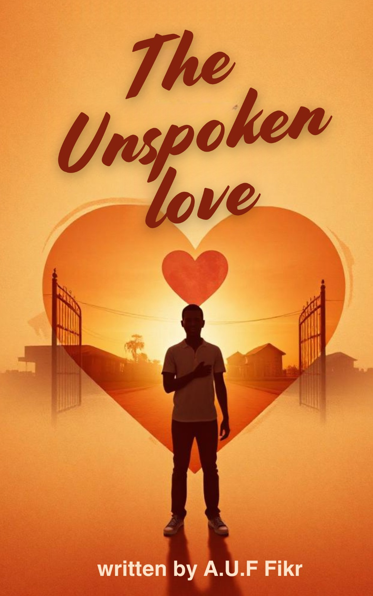

The Unspoken Love
A profound journey of resilience, duty, and the quiet dignity of a heart transformed by unrequited love.
Written by A.U.F Fikr
Begin Reading1. A New Beginning
The year 2010 began brightly at the Vocational Enterprise Institute, with the sun’s rays spreading across Kuje’s red-earth paths like golden liquid. Abuja’s dry-season heat was intense, but the campus thrived as a lively place. Red bougainvillea flowers spilled over cracked concrete walls, their petals shaking in the summer breeze, while the songs of sunbirds mixed with the rustling leaves of mango trees.
Faruk paused at the gates, his uniform neat, his bag slung over one shoulder. He was full of dreams as big as the Sahel sky. He took a deep breath, taking in the smell of freshly cut grass, the warm baked soil, and the faint, steady hum of diesel from the workshop ahead. [Enhancement Note: This sensory detail was expanded to ground the reader immediately in the physical environment of the school.] Around him, the courtyard was buzzing with activity. Students hurried by in worn shoes, their laughter ringing like wind chimes—a melodic mix of pidgin chatter, shouted nicknames, and the occasional clang of metal from the welding yard. Somewhere in the distance, a radio played Fela Kuti’s music, its rhythm perfectly matching Faruk’s heartbeat. He held his notebook tighter, its pages filled with intricate drawings and bold ideas. This is where it starts, he thought, stepping forward. The red dust rose beneath his feet, as if the earth itself whispered, Welcome.
Faruk, a young man with dark curly hair and inquisitive eyes, carried a small backpack and a wealth of determination. He had been offered provisional admission to start his senior secondary school education, and this new chapter promised boundless opportunities and challenges. He moved towards the entrance of the administration block with a mixture of raw excitement and nervousness. The sprawling campus, with its red-brick buildings and lush green lawns, seemed both welcoming and intimidating. He adjusted his backpack and took a deep breath, ready to embark. As he walked through the corridors, he couldn’t help but notice the buzz of activity around him—students chatting in groups, some laughing, others engrossed in animated discussions. The air was filled with footsteps, laughter, and the occasional shout from a teacher trying to maintain order.
His heart raced as he made his way to the administrative office to complete his registration. The office was a small, cluttered room with stacks of papers and files on every visible surface. A stern-looking man behind the desk glanced up at him and motioned for him to approach.
“Name?” He asked, his voice brisk and efficient.
Faruk replied, trying to keep his voice steady. “Abdullah Umar Faruk”.
He nodded, flipped through a stack of papers, and handed him a form. “Fill this out and take it to your class teacher. Welcome to the Vocational Enterprise Institute Kuje Zonal Office”. Faruk thanked him and quickly filled out the form, feeling a deep sense of anticipation as he left the office. This was the beginning of something new and exciting.
Faruk’s first class was Engineering Drawing, taught by Mr. Moses. The classroom was spacious, with large windows that let in plenty of natural light. Drafting tables were arranged in neat rows, and the walls were adorned with posters of technical drawings and blueprints. The topic written on the board was "Addendum". As Faruk entered the classroom, he noticed a group of boys huddled together, chatting and laughing. He hesitated for a moment, unsure of how to approach them, but before he could decide, one of the boys looked up and waved him over.
“Hey, you’re the new guy, right?” Jimmy greeted Faruk with a friendly grin. “I’m Jimmy. Welcome to our little corner of the world. These are Braimoh, Pishkini, Abdulsalam, and Pius”.
Faruk smiled back, deeply relieved by the warm welcome. “Thanks. I’m Faruk. Nice to meet you all”.
The boys quickly made room for him, their camaraderie evident in their playful banter and shared laughter. Jimmy, with his quick wit and infectious smile, was the life of the group. Braimoh, tall and athletic, had a gentle demeanor that balanced Jimmy’s exuberance. Pishkini, the quiet and thoughtful one, often surprised everyone with his insightful observations. Abdulsalam, always with a book in hand, was the scholar offering wisdom beyond his years, and Pius was the master of electronics who was always carrying tools. Faruk found himself drawn into their conversation, talking about favorite subjects, hobbies, and teachers. He felt an immediate connection and knew he had found friends who would make his time at the school enjoyable.
The bell rang, signaling the end of the class, and the students began to gather their things. As Faruk was packing up, he noticed a girl standing by the door, talking to one of her friends. She had a radiant smile and an air of confidence that immediately caught his attention.
“Who’s that?” Faruk asked Pishkini, nodding towards the girl.
Pishkini followed his gaze and grinned. “That’s Peace. She’s one of the smartest students in our year. And she’s really nice too”.
Faruk’s life took an unexpected turn when he first laid eyes on Peace. He felt a strange flutter in his chest as he watched her laugh at something her friend said. He had never felt this way before, and it both excited and unnerved him. She was a vision of grace and beauty, with her soft features and kind eyes that seemed to hold a world of secrets. As Peace walked into the classroom to pick her books before leaving, Faruk felt his heart skip a beat, a sensation he couldn’t quite explain.
2. The Glance of Feelings
The new term had just begun, and the students were settling into their routines. The sun was high in the sky, casting warm golden rays over the Institute. Faruk’s life had settled into a comfortable rhythm, surrounded by supportive friends. Little did he know that this day would mark the beginning of a new chapter in his heart. As Faruk and his friends were chatting before class, they noticed a new student standing by the door, looking a bit lost. He was tall and well-dressed, with an air of confidence that suggested he came from a wealthy background.
“Hey, who’s that?” Braimoh asked. “I don’t know,” Jimmy replied, “But he looks like he could use some help”.
Faruk, always eager to make new friends, walked over. “Hi, I’m Faruk. You must be new here”. The boy smiled and extended his hand. “Yes, I am. My name is Emeka. My family just moved to Abuja, and I transferred here”. Emeka quickly became part of their group. Despite his affluent background, he was down-to-earth and friendly, sharing fascinating stories about his previous school and his family’s travels.
The class of the day began. Mr. Moses, their engineering drawing teacher, was strict but fair. “Remember, precision is key in engineering drawing,” Mr. Moses would often say. “A single mistake can lead to disastrous consequences”. Faruk found himself excelling in the class, enjoying the challenge of creating detailed technical drawings. A few minutes later, Peace walked into the classroom with an air of grace and quiet confidence that commanded attention without a word. Her soft features were framed by curly hair that seemed to dance with the slightest movement, and her kind eyes held a depth that intrigued Faruk instantly.
Faruk felt his heart skip a beat. His friends noticed the change in his demeanor, the way his gaze seemed to follow Peace’s every move. Jimmy, always quick to tease, nudged him with a mischievous smile. “Looks like someone’s got a crush,” Jimmy whispered. Faruk tried to play it cool, but his cheeks betrayed him with a faint blush. “She’s…she’s just different,” he replied.
As days turned into weeks, Faruk’s feelings for Peace continued to grow. He admired her intelligence, her dedication to her studies, and her kindness towards others. He often found himself daydreaming about her. One afternoon, as Faruk was heading to the canteen for lunch, he saw Peace sitting alone under a tree, reading a book. He gathered his courage and walked over to her.
“Hi, Peace,” he said, trying to sound casual. “Mind if I join you?”.
Peace looked up and smiled. “Sure, Faruk. Have a seat”.
“What are you reading?” he asked.
“It’s a novel by Chimamanda Ngozi Adichie,” Peace replied. “I love her writing. It’s so powerful and thought-provoking”.
Faruk nodded, impressed. “I’ve heard of her, but I haven’t read any of her books yet. Maybe you can recommend one for me?”. Peace’s smile widened. “I’d be happy to. You should start with ‘Half of a Yellow Sun.’ It’s one of my favorites”. They continued to talk, and Faruk found himself captivated by Peace’s passion for literature and her thoughtful insights. In a later encounter, they bonded over the fantastic works of Chinua Achebe, establishing a shared literary connection that made the world around them fade into the background. [Enhancement Note: Mentioning Achebe bridges the connection to Nigerian literary heritage, highlighting their intellectual bond.]
Faruk’s friends were determined to help him win Peace’s heart. They organized group study sessions, invited Peace to join them for lunch, and organized a game of soccer after school. Faruk played with all his heart, determined to impress her, scoring several impressive goals. When he asked her if she enjoyed the game, she smiled politely, “Yes, it was fun to watch. You played really well”. His heart soared at the compliment, yet Peace remained somewhat distant.
What Faruk didn’t know was that Peace was struggling with her own feelings. She harbored feelings for Faruk, but chose to keep them hidden out of a fear of vulnerability and the complexities of young love. She admired his persistence and kindness but worried that a relationship might distract her from her studies. She confided in her close friends—Goodness, Blessing, and Benedictine—who encouraged her to give Faruk a chance. “You never know until you try,” Blessing added. But Peace remained hesitant, feeling torn.
One single fact was that not everyone at the school was supportive. Augustina, a classmate known for her mischievous nature, often made fun of them. “Look, it’s the lovebirds!” Augustina would jeer loudly. When Augustina approached them with a smirk, teasing Peace, Faruk felt a surge of protective anger. “Augustina, that’s enough,” he said firmly. “Leave us alone”. Peace looked upset, but her expression softened when Faruk gently apologized for Augustina's behavior. “Thanks for standing up for me,” Peace said. And so, the journey of unspoken love continued, shaping Faruk’s days and filling his nights with dreams of what could be.
3. Unrequited Love
The warm days of Abuja gradually gave way to the cooler breeze of the Harmattan season. As the months passed, Faruk’s feelings for Peace only grew stronger, and with them, the ache of unrequited love. Every moment spent in her presence was a blend of joy and longing, a bittersweet symphony that played on his heartstrings. No matter how hard he tried, Peace remained distant, her true feelings hidden behind a wall of uncertainty. He found it increasingly difficult to concentrate on his studies, and his grades began to suffer as he spent classes lost in thoughts of her.
During an engineering drawing class, Mr. Moses noticed his lack of focus. “Faruk, can you come to the front and explain this drawing to the class?”. Faruk snapped out of his daydream, walked to the front, and stumbled over his words. Mr. Moses sighed and asked to see him after class.
“Faruk, you’re a bright student, but lately, you haven’t been yourself,” Mr. Moses said gently. “Is there something you want to talk about?”.
Faruk hesitated. “It’s just… personal stuff, sir. I’m sorry for not paying attention”. Mr. Moses nodded, reminding him that his education was paramount and to ask for help if needed. Faruk left feeling a sense of guilt, knowing he had to balance his feelings with his academic responsibilities.
In the evening of the same day, as the sun began to set, casting a golden glow over the campus, Faruk decided to make one ultimate effort. He had written a heartfelt letter, pouring his emotions onto the page. He walked to the school library and found Peace sitting by the window, lost in a book.
“Peace,” he said softly, approaching her with a mix of hope and trepidation. “I… I wrote something for you”.
She took the letter, her fingers brushing against his, sending a shiver down his spine. She unfolded it and began to read. When she finished, she looked up, her eyes glistening with unshed tears. “Faruk, this is beautiful,” she whispered. “But…I can’t”.
Faruk felt his heart sink. “Why? Peace, I love you. I have loved you from the moment I saw you. Why won’t you let me in?”.
Tears streamed down Peace’s cheeks. “I care about you, Faruk. More than you know. But I’m scared. Scared of getting hurt, of losing what we have. I’m not ready for this kind of love”.
Faruk’s shoulders slumped in defeat. “I understand. I just needed you to know how I feel”. He turned and walked away, leaving Peace sitting alone by the window, clutching the letter to her chest. The weight of unspoken love pressed down on him.
Self-Reflection:
"When someone we care about is unready to receive our love, it is not a reflection of our inadequacy. It is simply a misalignment of timing and emotional readiness. Acknowledge the pain, but let it refine you, not define you."
His friends noticed the change in him. Jimmy tried to lift his spirits with jokes; Braimoh and Pishkini offered support, reminding him that love is a journey with ups and downs; Emeka encouraged him that he deserved unconditional love. They gathered in the library to help him catch up on material. Despite their efforts, an emptiness settled in his heart. Peace, too, was torn. She confided in Goodness over the phone, feeling terrible about hurting him. “Just take your time and figure out what you really want,” Goodness advised. But the emotional struggle took its toll on both of them, casting a constant shadow over their days.
4. Friends’ Interventions
As Faruk and his friends entered their second year at the Vocational Enterprise Institute, the dynamics shifted. Responsibilities increased with the anticipation of their final year. During this transformation, Peace was appointed as the Head Girl, highlighting her leadership skills and quiet strength. Pishkini, known for his wisdom, was chosen as Head Boy, and Faruk, with his unwavering dedication, was appointed as Assistant Head Boy.
The trio’s new roles brought them incredibly close. They worked tirelessly to uphold the school’s values, gathering at the back of the workshop after electrical and electronic practicals to discuss school matters. Surrounded by tools and the scent of freshly soldered wires, they found a rhythm.
“Peace, you’ve been doing an amazing job as Head Girl,” Faruk said one afternoon, breaking the hum of the machinery. “The students really look up to you”.
Peace smiled. “Thank you, Faruk. It’s been a lot of work, but knowing that I have you and Pishkini to rely on makes it easier”. As they talked, Faruk cherished these moments of collaboration, yet the unspoken tension remained a barrier neither could seemingly cross.
Faruk’s friends, ever supportive, continued their interventions. They organized a beautiful picnic in a park near the school, with lush green grass and tall shade trees. Sitting together on a blanket, Faruk took the opportunity to confess his feelings once again.
“Peace, I know I’ve said this before several times, but it’s the truth that cannot be hidden in my heart. Peace, I really like you,” Faruk said sincerely. “I just want a chance to show you how much you mean to me”.
Peace looked conflicted. “Faruk, I appreciate your feelings, but I’m just not ready for a relationship right now. I hope you understand”.
Faruk nodded. “I understand, Peace. I’ll wait for as long as it takes”.
As the end of their second year approached, the pressure mounted, and Faruk grew despondent. He confided in Pishkini in the empty classroom. “What if she never feels the same way about me?”. Pishkini placed a reassuring hand on his shoulder. “Faruk, you’ve done everything you can. Sometimes, you just have to let things happen naturally”. Faruk found solace in his friends' wisdom, accepting that he had to give Peace the space she needed, finding strength in his role as a leader and moving forward with quiet dignity.
5. Moments of Hope
The final year brought a whirlwind of activities. Faruk, Peace, and Pishkini took their roles as Head Girl, Head Boy, and Assistant Head Boy seriously, their meetings in the workshop becoming havens of shared purpose. After an intense practical session, they gathered, their faces flushed with exertion and satisfaction. The scent of solder and cut wires filled the air. Faruk praised Peace’s inspiring leadership, and she blushed, acknowledging she couldn't do it without their support.
The influence of their teachers played a massive role in shaping their experiences. Mr. Moses remained a beacon of patience in engineering drawing, reminding them that every line drawn was a step towards mastering their craft. Mrs. Talatu, the dynamic English teacher, inspired them through creative writing. When Faruk submitted a deeply personal short story based on his emotional experiences, she praised him warmly: “Faruk, your writing has a depth and sincerity that is truly remarkable. Keep expressing yourself through words, and you’ll find clarity and understanding”.
Mr. Adejobi challenged them in Physics. He would pose profound questions, asking them to ponder the true nature of light—whether it was a wave, a particle, or something beyond understanding. Mr. Muhammad opened their eyes to the digital age in Computer Science, teaching them MS Excel and encouraging them to use technology to create positive change. [Enhancement Note: Showing rather than just telling their academic rigor anchors their bond in shared ambition.]
These teachers instilled values of perseverance, curiosity, and creativity. Yet, despite the academic triumphs, the romantic undercurrent persisted. During a beautiful sunset gathering under the mango tree, Faruk and Peace found themselves alone. “Peace,” Faruk whispered softly, “I care about you deeply. I’m here for you, no matter what”. Peace looked at him with profound emotion but reiterated her stance. “You’re one of the kindest people I know. But I’m still not ready. There’s so much I need to figure out about myself and my future”. Respecting her honesty, Faruk continued to navigate his unrequited love, finding hope in the enduring connection they shared.
6. Graduation & Goodbyes
As the final exams approached, an unexpected twist unfolded. Several students, including Peace, were faced with severe family matters and personal challenges that prevented them from writing their exams at the school campus. This forced separation fractured the once tightly knit group.
Faruk felt a deep pang of sorrow as he watched Peace pack her belongings. The thought of her leaving before they had fully explored their connection was heartbreaking.
“Peace, are you sure this is what you want?” Faruk asked, his voice tinged with concern.
Peace nodded, her eyes filled with a mix of sadness and determination. “I have to, Faruk. My family needs me, and I can’t let them down. I promise we’ll stay in touch”.
“I’ll miss you,” he said softly. “You’ve been such an important part of my life”.
Peace smiled, her eyes glistening with unshed tears. “I’ll miss you too, Faruk. More than you’ll ever know”.
With those words, Peace left the campus, leaving Faruk to grapple with the void her absence created. The workshop felt empty and quiet. Jimmy tried to lift his spirits with jokes, while Braimoh and Pishkini offered unwavering support, reminding him that life was filled with unexpected twists. Emeka organized study groups to keep everyone’s spirits high. They worked hard, impressing Mr. Moses, Mrs. Talatu, Mr. Adejobi, and Mr. Muhammad.
Graduation day arrived, buzzing with excitement and nostalgia. Mr. Shuaibu, the principal, gave a heartfelt speech. “You have faced challenges and overcome obstacles,” he said. “You have grown into remarkable individuals, ready to make your mark on the world”. Faruk felt a lump in his throat as he accepted his certificate, missing Peace terribly. After the ceremony, the friends gathered one last time under the shade of the baobab tree, laughing, reminiscing, and making promises to stay in touch. Tears were shed as each friend embarked on their own path. Faruk’s heart still ached, but he cherished the lessons learned.
7. A Soldier’s Heart
After graduation, life took Faruk in a new and unexpected direction. With a strong sense of duty, he enlisted in the Nigerian Army. The rigorous training and discipline provided him with a new sense of purpose, pushing him to the absolute boundaries of his physical endurance. Each exercise revealed the extent of his capabilities. He found solace in the deep bonds formed with his fellow soldiers, a brotherhood that mirrored the loyalty of his schoolmates Jimmy, Braimoh, Pishkini, and Emeka.
Despite his demanding new life, a quiet and persistent image of Peace remained ever-present in his thoughts. He often thought about her, writing letters in a small notebook gifted by Mrs. Talatu, but never sending them, fearing she might not feel the same. As a soldier, he traveled across Nigeria, facing numerous challenges and intense danger. One evening, after a grueling mission, he sat under the stars and wrote to her:
"Peace, my dearest. My thoughts are constantly drifting back to you. This soldier’s life is undeniably challenging, a real test of endurance. It has, however, forged resilience within me... I deeply miss your presence and long for the day our paths converge once more... Know that you are ever-present in my thoughts. Love always, Faruk."
He folded the letter and placed it in an envelope, finding solace in the act of writing. Faruk rose quickly through the ranks, his bravery earning the respect of his superiors. Years passed, and his career flourished.
Then, an invitation arrived for a Vocational Enterprise Institute reunion. His heart practically leaped with anticipation, dominated by the hope that Peace would be there. He donned his uniform with pride and returned to the familiar campus. He joyfully reconnected with Jimmy, Braimoh, Pishkini, and Emeka. Finally, his eyes landed on Peace standing at the edge of the crowd, as radiant as ever.
“Peace,” he said softly. She turned, her eyes widening in surprise. “Faruk! It’s been so long”. They embraced, the years melting away. Faruk learned that Peace had pursued her massive dreams, initially becoming a physician, before delving into higher scientific research. She had married and was blessed with children, living a life of fulfillment. Faruk felt a mix of happiness and sorrow, realizing that love was not always about being together, but about the lasting impact someone leaves on your heart.
8. Reunion & Revelations
The reunion was a turning point. It brought closure to the chapter of unspoken love that had defined Faruk's youth. He returned to his duties in the Nigerian Army carrying the lessons of love and loss. Years later, during a brief leave, Faruk found himself standing outside the gates of the National Physics Research Institute, a sprawling complex of glass-paneled laboratories where Peace now led a pioneering team in renewable energy and quantum mechanics.
A lab assistant directed him to Lab 3B. Faruk paused at the doorway, watching Peace gesture animatedly at a holographic simulation of molecular structures, debating thermodynamics with a colleague. When she spotted him, she smiled warmly and dismissed her team. “Faruk? This is unexpected”.
“I wanted to see the genius at work,” he replied. They retreated to her office, cluttered with journals and a framed photo of their old school group. Peace explained her frustrating but rewarding work designing nanomaterials for solar storage. “It’s like solving a puzzle the universe left for us,” she said. Faruk nodded, recognizing the same intense drive that fueled his military missions—both were building a legacy.
Their conversation wove through shared memories. Finally, Peace sighed. “You know, I almost wrote to you once. After that reunion. But I thought… you’d move on”.
Faruk’s chest tightened. Reaching into his pocket, he pulled out the weathered envelope containing the unsent letter he wrote under the stars years ago. “I wrote this years ago. Never had the courage to send it”.
Peace accepted it, touching the faded ink. “A time capsule,” she murmured.
“It is,” Faruk said, standing and straightening his beret. “But we’re not those kids anymore, are we?”. Faruk left the institute feeling a profound sense of closure, looking at the amber sky. [Enhancement Note: Highlighting this closure emphasizes that true love doesn't require ownership to be validated.]
That night, Peace opened the letter, tears blurring the lines. In her reply, she sent him only two profound sentences: ‘’Some forces bind us across distance. Thank you for being mine.’’ When Faruk received it, he tucked it into his helmet, a true talisman of closure.
9. Reflections & Acceptance
Having visited Peace, Faruk was back to his life in the Nigerian Army with a renewed sense of purpose and absolute clarity. He was no longer the boy who had stumbled through the halls of the Vocational Enterprise Institute, heart raw and restless. He was a man shaped by grief, obligation, and the silent dignity of letting go. The barracks greeted him with the usual noise of drills and companionship.
In quiet moments, Faruk would sit under the stars on a rocky outcrop outside the camp. He let his mind wander back to the scent of chalk dust, Jimmy’s jokes, Braimoh’s steady hands, Pishkini’s wisdom, Emeka’s laugh, and Peace—a quiet force that had kept him steady.
One night, sitting by a campfire with his comrades, Faruk pulled out the faded photograph of the five friends in front of the school gates. “You still carry that old thing?” a comrade asked. Faruk chuckled. “They’re my compass”. When asked about the girl with the disarming smile, Faruk traced Peace’s face. “A friend. The kind who teaches you that love doesn’t always mean holding on”.
Prompted by Lance Corporal Musa and Private Mahmud, Faruk shared his story. He spoke of the institute, the clash of metalwork, the friends, and the unspoken tension with Peace. “We never spoke of it,” Faruk said in the firelight. “But she taught me that love isn’t a cage. It’s the wind; you can’t hold it, but it carries you”. The silence that followed was full of shared understanding.
As years passed, Faruk excelled in his career and maintained contact with his friends. His heart remained open, and he eventually found love once more with someone who saw him for who he truly was, building a life filled with laughter and fulfillment. His life, transitioning from the structured institute to the tumultuous battlefields, culminated in a state of absolute peace and personal acceptance.
“In the silent whispers of our hearts, love found its voice. Unspoken yet understood, it was a bond that defied words, an emotion that lived in the spaces between breaths.”
- A.U.F Fikr
Lessons Learned
As we turn the final pages of Faruk’s journey, we are left with a tapestry of emotions, experiences, and lessons that speak to the human condition. Here is how we can apply these profound truths to our own lives:
1. The Power of Unspoken Love
Love is not always about possession or reciprocation. Faruk’s unspoken love inspired him to become a better person. Cherish the connections you have, and express your feelings when the time is right, respecting the other person's boundaries.
2. Resilience in the Face of Rejection
Faruk never let heartbreak define him. He channeled his emotions into personal growth and his military career. Use setbacks as stepping stones and focus only on the actions and attitudes you can control.
3. The Importance of Friendship
Jimmy, Braimoh, Pishkini, and Emeka were constant sources of support. Cultivate meaningful friendships, lean on others when needed, and remember that vulnerability deepens true connections.
4. Embracing Change and Letting Go
Change is inevitable. Faruk demonstrated adaptability and grace by accepting Peace's choices and his new life path. Learn to let go with grace and find peace in closure so you can move forward.